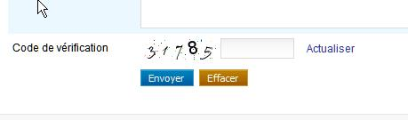

Web développer - Contenu textuel
S’assurer que les contenus textuels soient structurés avec la sémantique appropriée
Donner un titre aux pages #
Cible : tout le monde, et en particulier les personnes déficientes visuelles.
Quand : dès la conception et pendant le développement.
Description :
Donner à chaque page un titre qui lui est spécifique et qui reflète son contenu ou sa fonction (balise <title>).
Le titre de la page est le premier élément lu par la synthèse vocale, il doit permettre d’identifier la page sur laquelle on se trouve.
À vérifier :
- Bien qu’il n’y ait pas de règle, en général, on va de l’information la plus spécifique vers la moins spécifique (exemple : nom de la page courante - nom du site). Dans d’autres contextes d’utilisation pour lesquels l’utilisateur a de nombreuses applications ou sites ouverts en même temps, il vaut mieux aller de l’information la plus générale vers la plus spécifique (exemple : nom du site - nom de la page).
- Lorsque le contenu de la page est modifié dynamiquement (affichage du résultat d’une recherche, erreurs dans un formulaire, action utilisateur ajoutant du contenu…), le titre de la page doit refléter cette modification du contenu.
Objectif utilisateur :
Permettre aux utilisateurs d’identifier le sujet d’une page, de se repérer et se faire une idée précise du contenu de la page sans avoir à le lire. C’est, notamment, le premier élément vocalisé par un lecteur d’écran.
Exemple valide :
<title>Accueil - Espace client Orange</title>
Exemple non-valide :
<title>Accueil</title>
Référence WCAG :
Donner des titres aux rubriques #
Cible : tout le monde, et en particulier les personnes déficientes cognitives, avec des difficultés pour lire et déficientes visuelles.
Quand : dès la conception, à la rédaction du contenu et pendant le développement.
Description :
Identifier les balises de titres à utiliser (balises HTML h1 jusqu’à h6) pour structurer le contenu des pages.
Les personnes malvoyantes naviguant à l’aide d’un lecteur d’écran peuvent accéder à la liste des titres de la page pour naviguer rapidement.
Tout comme dans un fichier Word, il est possible d’utiliser la table des matières si des titres ont correctement été positionnés à l’intérieur du document.
À vérifier :
- Les titres doivent être pertinents et non vides.
- Il ne doit pas exister de saut dans la hiérarchie des titres (on ne passe pas directement d’un titre
h2à un titreh4). - On peut mettre plusieurs
h1par page (se limiter tout de même à deux dans la majorité des cas). - Les lecteurs d’écran ne prennent pas en compte les titres masqués (
visibility: hidden;,display: none;ouaria-hidden). - Le contenu généré dynamiquement doit aussi respecter cette exigence.
Objectif utilisateur :
- Pour tous les utilisateurs : améliorer la structure de la page et de son contenu.
- Pour les utilisateurs déficients visuels, déficients cognitifs ou ayant des difficultés de lecture : faciliter la navigation et l’accès au contenu.
Objectif technique :
- Pour les moteurs de recherche : améliorer le référencement.
Exemple valide :
Un titrage de page cohérent et pertinent :
<h1>Accueil – Orange</h1>
<h2>Les actualités</h2>
<h2>La fibre arrive !</h2>
<h3>Êtes-vous éligible ?</h3>
Exemple non-valide :
Un titrage de page avec un saut de niveau h2 → h4 :
<h1>Accueil – Orange</h1>
<h2>Les actualités</h2>
<h2>La fibre arrive !</h2>
<h4>Êtes-vous éligible ?</h4>
Outils :
Des extensions à installer dans votre navigateur permettent d'extraire la liste des titres :
- L’extension HeadingsMaps disponible sur Firefox et chrome.
- L'extension Web developer.
Référence WCAG :
Respecter la sémantique HTML #
Cible : tout le monde, et en particulier les personnes déficientes visuelles, avec des déficiences cognitives et les seniors.
Quand : dès la conception et à la rédaction du contenu.
Description :
Utiliser correctement les éléments HTML, en respectant ce pourquoi ils sont faits (validation du code et respect des spécifications) et donc leur sémantique.
À vérifier :
Vérifier que la page, si besoin, utilise des listes sémantiquement pertinentes (pas de liste vides ou ne contenant qu’un seul élément) :
<ol>pour les listes ordonnées,<ul>pour les listes non ordonnées,<li>pour les éléments de liste.<dl>,<dt>et<dd>pour les listes de définitions
Les listes possèdent au moins deux éléments car sinon ce ne sont pas des listes (sauf si elles sont générées dynamiquement)
S’assurer de bien baliser les citations longues <blockquote> ou brèves <q>.
Les liens sont bien des liens (i.e. balise <a>) : ils pointent effectivement vers une autre adresse, page ou onglet…
Les boutons sont bien des boutons (i.e. balise <button>, ou <input type="button">) : ils déclenchent une action, une validation, ou encore permettent de faire un choix…
Penser, dans la mesure du possible, à respecter l’apparence classique de ces éléments pour ne pas perturber l’utilisateur habitué à leur aspect spécifique.
Dans le code HTML s’assurer, lors de la validation, qu'à minima :
- les éléments ont des balises de début et de fin,
- les éléments sont imbriqués conformément à leurs spécifications,
- les éléments ne contiennent pas d’attributs dupliqués,
- chaque
idest unique.
Objectif utilisateur :
Permettre à tous les utilisateurs d’anticiper la manière d’utiliser et les comportements possibles pour un élément d’interface donné, en assurant que le bon fonctionnement des AT.
Objectif technique :
Oblige à la structuration cohérente du contenu par le créateur du site et permet d'améliorer la maintenabilité.
Exemple non-valide :

Dans cet exemple, le lien « Actualiser » devrait être un bouton « Actualiser » car ici il déclenche une action et non le chargement d’une URL (page).
Référence WCAG :
Outil : validateur HTML et CSS du W3c
Indiquer la langue principale et les changements de langue #
Cible : pour tout le monde, et en particulier les personnes déficientes visuelles.
Quand : lors du le développement.
Description :
Spécifier la langue principale du document grâce à l’attribut lang dans la balise html.
Préciser également la langue d’un contenu exprimé dans une langue autre que la langue principale, en utilisant l’attribut lang dans l’élément HTML contenant l’expression en langue étrangère.
À vérifier :
Pour les mots ou les expressions en langue étrangère passés dans l’usage courant (Google, newsletter…) ou les noms propres, ne pas indiquer de changement de langue.
Objectif utilisateur :
Cet attribut permet d’indiquer à la synthèse vocale la langue à utiliser.
Objectif technique :
Permettre aux moteurs de recherche d’identifier la langue d’une page pour améliorer le référencement naturel.
Exemple pour une page en français :
- pour du HTML :
<html lang="fr"> - pour du XHTML :
<html xmlns="http://www.w3.org/1999/xhtml" xml:lang="fr" lang="fr">
Exemple de changement de langue :
découvrir Orange <span lang="en">live</span> TV
Référence WCAG :
Structurer les tableaux de données #
Cible : tout le monde, et en particulier les personnes déficientes visuelles.
Quand : dès la phase de conception et lors du développement.
Description :
Pour des données tabulaires :
- Utiliser l’élément
tableavec les éléments enfantsth(pour les cellules d’entêtes),td,tr. - Utiliser l’attribut
scopeavec la valeurrow/colpour associer les cellules d’en-têtes et les cellules de données ; pour des tableaux complexes, utiliser les attributsidetheaders. - Utiliser la balise
caption, une baliseh1àh6juste avant le tableau ou lier un texte proche du tableau via un attributaria-labelledbydans l’élémenttablepour associer un titre au tableau (cf. les attributs ARIA qui peuvent vous sauver). - Ajouter un résumé afin d’expliciter la structure d'un tableau complexe :
- HTML5: ajouter le résumé directement dans la légende (
caption). - Version antérieure d'HTML: ajouter le résumé dans un attribut
summary.
À vérifier :
- Rappel : ne pas utiliser de tableaux à des fins de mise en page.
- La légende (
caption) peut être remplacée par un titre de section (hx) placé avant le tableau. - Préférer scinder un tableau complexe en plusieurs tableaux plus simples.
- Les balises
tbody,tfootettheadn’ont aucune influence sur l’accessibilité, il n’y a donc pas d’obligation à les utiliser.
Dans le cas d’un tableau complexe, un résumé est présent pour expliciter la structure :
- HTML5: le résumé du tableau est présent dans la légende (
caption). - HTML5 - solution alternative: le résumé est lié au tableau via un attribut
aria-describedby - Version antérieure d'HTML: le résumé est présent dans un attribut
summarydu tableau
Objectif utilisateur :
Donner un résumé et un titre aux tableaux de données permet à tous d’en connaître l’objet rapidement sans avoir à le parcourir. Pour des utilisateurs déficients visuels, lier les cellules aux en-têtes permet de se situer dans le tableau et de comprendre les données de celui-ci.
Référence WCAG :